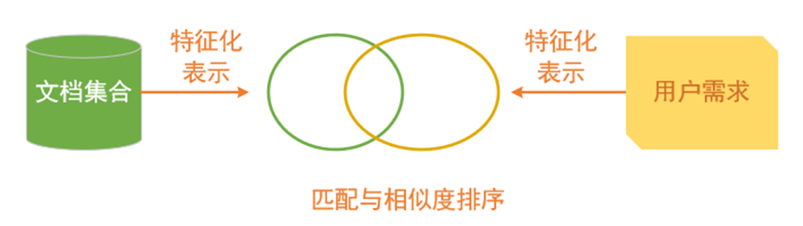
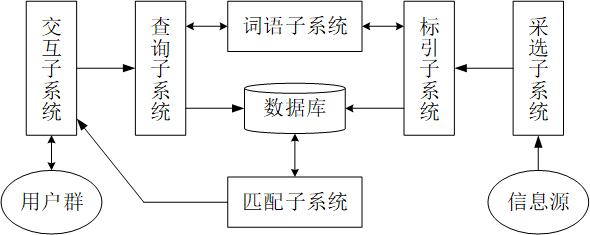

信息检索基础
信息检索基础
信息检索概述
“信息检索”（Information Retrieval，IR）一词最早出现于1952年，由美国学者穆尔斯（C. W. Mooers）提出，从1961年开始在学术界和实践领域中得到广泛的应用。
信息检索概念
-
信息检索是从大规模非结构化数据的集合中找出满足用户信息需求的资料的过程。
-
就信息检索这个概念而言，不同的使用者对它有不同的解释，大体上分为两类：
- 第一类是广义的，把“信息检索”当作“信息存储与检索”的简称，信息存储是指将有用信息按照一定的方式组织和存放起来，信息检索是指查找或提取所需信息。本课程介绍广义的信息检索。
- 第二类是狭义的，是指按照一定的方式从现有的信息集合或数据库中，找出并提取所需要的信息。
信息检索原理

信息检索核心问题：如何计算查询式与文档的相似度？
信息检索逻辑结构
信息检索系统的两个基本功能是存储和检索，这两大基本功能可以分解为六个子系统：采选子系统、词语子系统、标引子系统、查询子系统、匹配子系统、交互子系统。

- 采选子系统：从外部的各种信息源向系统进行输入操作。
- 词语子系统：对采用规范化词语的系统在标引和查询时所使用的词语进行规范化的控制和处理。
- 标引子系统：使用系统规定的规范化词语，对输入的信息中具有检索价值的特征进行表示和描述。
- 查询子系统：使用系统规定的规范化词语描述用户的检索询问，包括对用户询问进行概念分析和概念转换两个过程，也包括按照系统的既定规则指定检索策略和构建检索式。
- 匹配子系统：完成对用户询问与数据库的匹配过程，并与词语子系统共同实现对信息检索系统的存储与检索两大基本功能的协同和沟通。
- 交互子系统：保证系统与用户之间能够进行良好的沟通。一方面，要全面、准确地反映用户的真实需求，形成明确的检索目标；另一方面，把与用户查询全部或部分匹配的检索结果及时地反馈给用户。
信息检索分类
按照信息检索的对象性质划分：
- 文献检索：对象是文献。
- 数值检索：对象是以数字形式表示的具体数值。
- 事实检索：对象是某一特定的客观事实。
按照计算机检索技术划分：
- 脱机检索：计算机检索的最早技术。
- 联机检索：功能较强、数据库质量较好。
- 光盘检索：分光盘单机系统和联机系统。
- 网络检索：基于搜索引擎技术，是信息检索的主要途径。
信息检索研究内容
信息检索的研究内容包括以下几个方面：
- 信息检索理论研究。主要集中在四个方面：检索模型、标引理论、信息组织理论、相关性理论。
- 信息检索方法研究。检索方法是指查找信息时所采用的具体方法，例如，布尔检索法、截词检索法、加权检索法。
- 信息检索技术研究。检索技术是实现信息检索有效性的手段和保障。
- 信息检索语言研究。检索语言是信息检索系统不可缺少的工具，是用户与系统交流、互动、沟通的媒介。
- 信息检索系统研究。主要包括信息检索系统的结构、功能、类型、分析、开发、运行、维护、管理及评价。
- 信息检索服务研究。通常包括用户及其需求的类型以及用户认知、心理行为等特征的调查、分析、研究，各种服务方式和模式的开发及对其实际效果和用户满意度的评价，用户认知和行为模型的建立等。
- 信息检索评价研究。通常包括检索性能评价、检索效益评价、检索评价方法与步骤、检索评价指标体系以及评价实例研究等。
小结
请你思考以下内容：
- 什么是信息检索？
- 信息检索的基本原理是什么？
- 举例说明信息检索的应用。谈一谈自己对哪个研究内容最感兴趣，为什么？
信息检索基础
http://youngzhang/2025/12/03/信息检索基础/